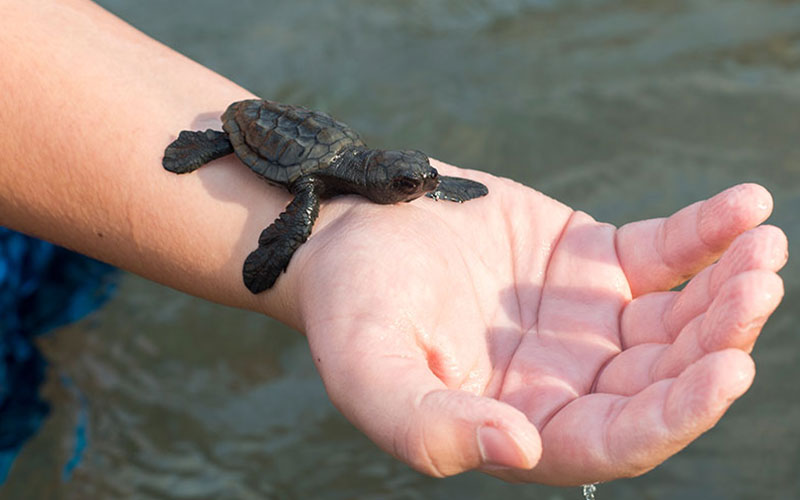
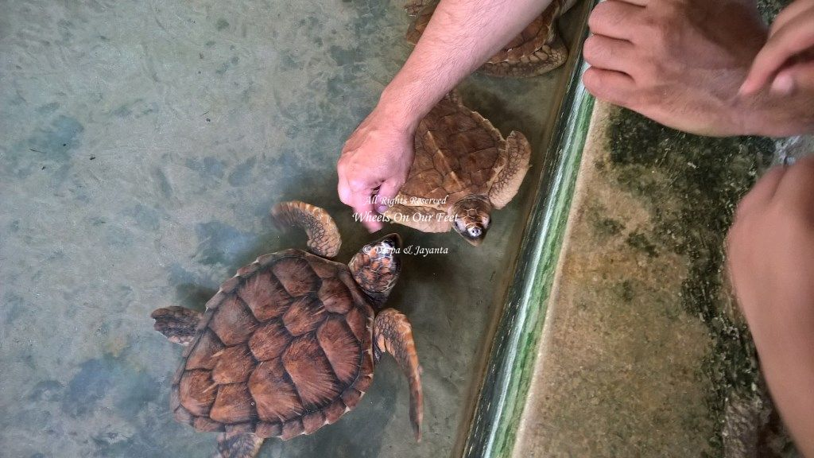
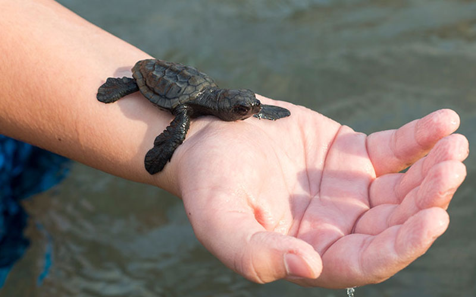
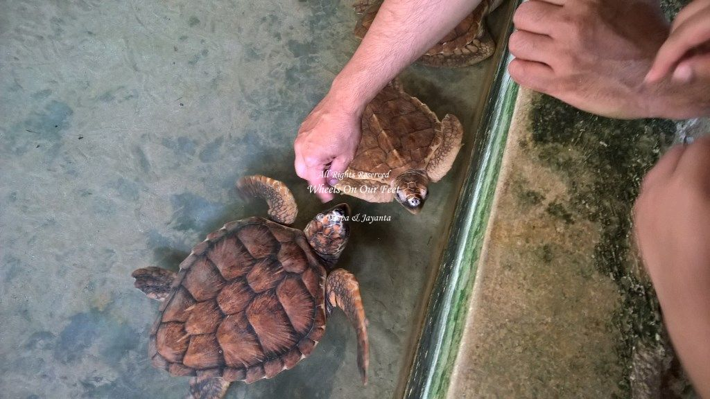

The Bentota Turtle Hatchery Project is a popular attraction in Bentota for all travellers.
The pristine golden shores that draws you to our island, also provides an enticing nesting
ground for several endangered turtle species from the Olive Ridley to the Leatherback turtle.
The project aims at conserving and protecting the eggs from predators and other dangers.
Visit the turtle hatchery in Bentota to learn about these endangered graceful creatures of the sea.
Conservation Efforts
The Turtle Care Centre at Kosgoda beach is one of 18 turtle hatcheries along the southern coast of
Sri Lanka. The centre is located in the South Western coastal village of Kosgoda and was establised
in 1981. It is also very popular as all five species of turtles that visit Sri Lanka nest in Kosgoda.
This is not so with many of the other hatcheries around the island whose beaches host only some of
the species.

 


